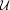
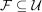
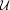
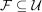
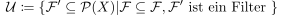
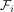
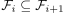
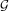
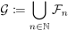

Existenz eines Ultrafilters als Obermenge
1. Satz
Sei  eine Menge und
eine Menge und  ein Mengenfilter auf .
Dann existiert ein Ultrafilter  mit .
ein Mengenfilter auf .
Dann existiert ein Ultrafilter  mit .
2. Beweis
Betrachten wir die Menge

1
Diese Menge ist partiell geordnet bezüglich Inklusion, nichtleer wegen und für eine Kette  mit  gilt, dass  eine obere Schranke ist mit

2
Siehe: Vereinigung von einer Kette von Mengenfiltern als Mengenfilter Damit folgt nach dem Lemma von Zorn, dass ein Maximum besitzt